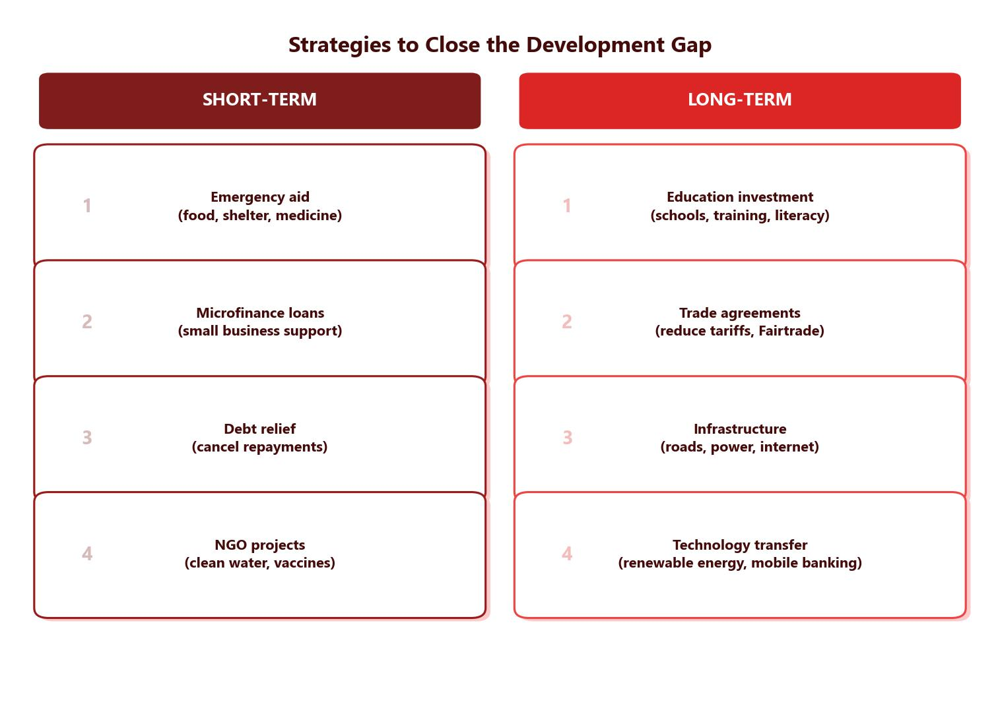

Top-Down Development Strategies
Top-down development is where national governments and large external organisations make decisions about how best to develop a country. These strategies are large in scale and involve significant investment.
Foreign Direct Investment (FDI)
Foreign direct investment (FDI) occurs when TNCs invest money in other countries by building factories or offices. Local people get jobs in construction and then in the factories themselves. This can trigger a multiplier effect — the investment creates jobs, workers spend their wages locally, and this spending supports other businesses, creating even more employment. However, TNCs often relocate to countries where labour is cheaper, which can lead to exploitation, and profits frequently return to the HIC headquarters.
Industrial Development
Many LICs depend on selling primary products (raw materials) at low prices. Moving into manufacturing (secondary sector) allows countries to add value to raw materials and sell finished goods at higher prices. China’s transformation since the 1980s is a prime example — government policies turned the country into “the workshop of the world,” making it one of the fastest-growing economies. However, huge inequalities still exist within China, showing that industrial development does not benefit everyone equally.
Aid
International aid is a gift of money, goods or services to a developing country. It can come in different forms:
- Bilateral aid — given directly from one government to another.
- Multilateral aid — given through international organisations like the United Nations or World Bank, funded by multiple countries.
- NGO aid — provided by charities and non-governmental organisations like Oxfam or WaterAid.
Aid can save lives in emergencies, rebuild housing after disasters, and provide medical training and equipment. However, critics argue that aid can increase dependency, may not reach those who need it most due to corruption, and can be used as political leverage by donor countries.
Some see aid as an extension of colonialism, with HICs remaining the “rich saviours.” Many LICs have become dependent on aid rather than developing their own economies, creating a cycle of deprivation.

Bottom-Up Development Strategies
Bottom-up development gives local people more control over how their community develops. These strategies tend to be smaller in scale but can be highly effective.
Fair Trade
The Fairtrade movement ensures that farmers in LICs receive a fair price for goods like coffee, cocoa and bananas. Companies selling Fairtrade products must pay a guaranteed minimum price, protecting farmers even when global prices fall. Buyers also pay a “social premium” that funds local projects such as schools and health centres. However, only a small proportion of the extra money reaches the original producers, and the high cost of Fairtrade goods means many consumers in HICs avoid buying them.
Intermediate Technology
Intermediate technology includes tools and machines that are simple to use, affordable to buy and cheap to maintain. The Upesi stove in Kenya is a locally produced stove that reduces wood consumption, preserves rainforest biodiversity, cuts indoor air pollution and lowers respiratory infections in women and children.
Debt Relief
Debt relief is when some or all of a country’s debt is cancelled. In 2005, the G8 (the world’s richest countries) agreed to cancel the debts of many poor countries. Zambia had $4 billion of debt cancelled, and by 2006 it had enough money to start a free healthcare scheme for millions of people in rural areas. To qualify, countries had to show they could manage their finances, had no corruption, and would spend the saved money on education, healthcare and reducing poverty.
Microfinance Loans
Microfinance provides small loans to people in LICs who cannot borrow from traditional banks. This allows them to start businesses and become financially independent. The FINCA bank in Nigeria lends money for people to buy sewing machines and receive training to become tailors, selling clothing to earn a living. Microfinance has been especially important for improving the role of women in many communities.
Top-down strategies (FDI, industrial development, aid) are large-scale and led by governments or international organisations. They can bring rapid change but may not benefit everyone equally. Bottom-up strategies (Fairtrade, intermediate technology, debt relief, microfinance) are smaller-scale and driven by local communities. They empower people directly but can be slower to create widespread change. The most effective approach often combines both.
Case Study: Tourism in Kenya
Kenya is located in East Africa, bordering the Indian Ocean. It attracts tourists with its wildlife safaris, the Maasai Mara, sandy beaches at Mombasa, and cultural experiences with the Maasai tribe. Tourism contributes over 10% of Kenya’s GNI and employs approximately 500,000 people — around 10% of the population.
How Tourism Reduces the Development Gap
- Jobs — people work in hotels, as tour guides and creating cultural crafts for visitors.
- Foreign currency — tourists spend money that the government can invest in healthcare, education and infrastructure.
- Multiplier effect — as tourist numbers increase, more infrastructure is needed, creating construction and tourism-related jobs. Local people earn more, have more disposable income, and spend it in the local economy, generating even more employment and tax revenue.
- Skills development — new infrastructure projects give local people opportunities to develop skills in construction and hospitality.
Tourism contributes just over 10% of Kenya’s GNI and employs around 500,000 people (about 10% of the population). Foreign currency from tourists allows the government to invest in improving services and quality of life.
Challenges of Tourism in Kenya
- Economic leakage — much of the money from tourism goes to foreign tour operators (like Virgin Holidays) rather than staying in the Kenyan economy.
- Low-skilled jobs — skilled positions in hotels and tour companies are often filled by foreign workers, leaving lower-paid jobs for local Kenyans.
- Environmental damage — safari tourism and coastal development can damage ecosystems and wildlife habitats, which could deter future tourists.
- Sustainability concerns — tourism revenue fluctuates due to terrorism threats (such as the 2019 Nairobi hotel siege), disease outbreaks (COVID-19 caused a dramatic decline in 2020), and seasonal variations.
Kenya’s tourism revenue is vulnerable to external shocks. Terrorist incidents and political instability have caused significant dips in visitor numbers over the years. The COVID-19 pandemic in 2020 caused the most dramatic decline, as global travel effectively stopped. This shows that relying heavily on tourism for development carries risk — when tourist numbers drop, jobs are lost and government revenue falls.